01The problem
A PM's knowledge is spread across working notes, meeting transcripts, docs and chat threads. To get an answer, people have to find the PM. And when the PM leaves, the context leaves too.
I wanted my stakeholders to keep asking me things when I'm not in the room: how decisions were made, where things live and what's still open.
02What I built
Ask Dennies is a personal knowledge assistant that runs as one self-contained HTML page. Inside it is a miniature vector database of about 18,000 passages: my working-notes wiki, about 11 design docs and artifacts I wrote, a knowledge graph of my notes with about 730 linked concepts, and about 980 project files, from docs, slides, PDFs and sheets to meeting notes and transcripts. There's no server and no hosted database to run. I designed and built it myself, with Claude Code as my pair programmer.
- Ask in plain words. Ask the way you'd ask a teammate. No special syntax, and no need to know where anything lives.
- Answers with receipts. Every answer cites its sources and ends with a High, Medium or Low confidence score, with a percentage. Green means a source says it directly, amber means the answer is pieced together, and red means the evidence is thin.
- Answers data questions with a chart. Ask a data question in plain words. Claude writes the SQL and runs it read-only, and the answer shows the SQL, a results table and a chart, so anyone can check the work.
- Acts with your OK. It can draft a message or email, set up a meeting, file a ticket or save a doc. Each action shows up as an editable card, and nothing happens until a person clicks Approve. Messages and emails stay drafts.
- Stays fresh. Drop a new file in the shared folder and the page embeds it in the browser and saves it once, for everyone. No rebuild, no pipeline.
- Learns its gaps. Questions it can't answer go to an owner-only Backlog tab, so the owners can fill the gaps.
03How it works
- Build once. On my laptop, a build script extracts the text from every source and splits it into passages. It embeds each passage with model2vec (potion-base-8M static embeddings, 256 dimensions). The vectors are quantized to int8, with one scale value per row, and ship as static files inside the page: about 12 MB in total.
- Search in the browser. I rewrote the WordPiece tokenizer in plain JavaScript, and it matches the reference tokenizer exactly, so the browser embeds each question itself. The page then scores the question against all ~18,000 passages, by meaning (cosine similarity) and by keywords (BM25), in about 20–70 ms. Some sources get a ranking boost, and no single source can fill more than 3 of the top spots.
- Claude answers. The top 12 passages go to Claude with the question, so most answers start in about 3 seconds, in one step. Only when the index can't answer does Claude reach for live tools: searching the cloud drive or team chat, or running read-only SQL against the data warehouse. Those tools run under the viewer's own access, so nobody sees more than they already could.
- Act and learn. Actions arrive as cards that wait for Approve. New files join the index on their own, and unanswered questions go to the owners' backlog. An owner-only Visits tab shows who visited, when, which tabs they opened and what they asked. The page tells visitors about the log, and owners can delete any entry.
04Data visuals
A map of what I know
Each dot is one real passage from the index, 17,919 in all. The layout comes from UMAP, run on the 256-dimension passage vectors, so passages that mean similar things land near each other. Color shows the source type. Pick one of the four questions to replay a search: it lights up the 12 closest passages by meaning, then carries them to Claude.
A map of what I know: 17,919 passages, laid out by meaning. Open it on its own page →
The map stores only a position and a source type for each passage. It has no text, titles, links or vectors, so hovering a dot shows its source and nothing else. The split between meeting notes and project files is approximate, based on file names.
A live data answer
Ask turns a data question in plain words into SQL, runs it read-only, and comes back with a chart, the query and a results table.
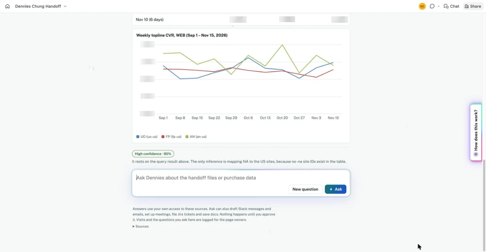
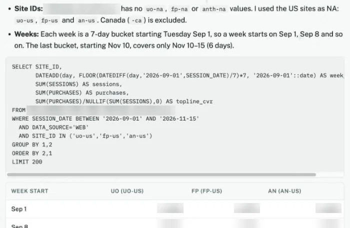
05Design choices
There's nothing to host, maintain or pay for. The index ships with the page.
model2vec is tiny and runs in JavaScript with no GPU. It's fast enough to score every passage for every question. Keyword search covers its weak spots.
Meaning handles fuzzy questions. Keywords catch the exact names, IDs and table names that embeddings miss.
One step replaces a 10–30 s chain of searches.
Confidence scores and a gap backlog replace confident guessing.
It does the busywork. It never sends anything on its own.
A glowing "How does this work?" tab opens a 7-step animated tour that explains the system to non-technical stakeholders.
06Embeddings & permissions
Keeping the index inside the page was deliberate, and it has a clear boundary. It's the right design for one person's knowledge, read by a known group. It's the wrong design wherever different people should see different things, because a page can't tell who is allowed to see what.
Embeddings, in plain words
- Embed. A small model turns a piece of text into 256 numbers. Think of them as coordinates on a map of meaning. Texts that mean similar things land close together, even with different words: "failed payments" sits near "declines."
- Build. Split every doc into passages of about 800 characters, turn each one into coordinates, and store the coordinates with the text. That stored set is the index.
- Ask. Turn the question into coordinates the same way, measure how close it is to every passage, and keep the closest 12.
- Answer. Send those 12 passages and the question to Claude, which writes the answer from them. That pattern is RAG: retrieval-augmented generation.
A vector database is that index plus the plumbing around it: fast search across millions of vectors, filters, updates, and a server that controls who can search what. At ~18,000 passages I don't need the fast-search part. Checking every passage takes about 50 ms in a browser, which is why the whole thing fits in the page. And because embeddings are fuzzy about exact names like table names and IDs, the page blends in keyword search.
The search index lives inside the page: no vector database to host and no API key. Search runs in your browser, and Claude sees only the top passages.
Where an in-page index works, and where it breaks
Nothing to host, pay for or maintain.
Search runs on the viewer's own computer, and the index ships with the page, so it can't break on its own.
Every viewer gets the same index. This is the big one, and the next part covers it.
The page ships the passage text, not only the numbers. Anyone who can open it can read every passage, not just the 12 an answer uses. Even the numbers alone can be partly turned back into words.
Comfortable up to tens of thousands of passages. At hundreds of thousands, the download and memory use get heavy.
Removing a file doesn't remove its passages from the built-in index until a rebuild. And the small model is weaker than big embedding models; keyword search covers much of the gap.
Who can see what
Embeddings know nothing about permissions. A vector is just numbers, and nothing in it says who may see it. Permissions have to be enforced by something the viewer can't get around, which means a server that knows who they are. So Ask Dennies splits the work in two:
- The built-in index is the same for every viewer. So the rule is simple: only put in what everyone who can open the page may see.
- Live tools use the viewer's own sign-in. The cloud drive, team chat and data warehouse check permissions themselves, so someone outside a chat channel can't reach it through Ask.
- The self-updating index follows the same rule. New files in the shared folder are saved once, for every viewer, so that folder is treated as open to everyone the page is shared with.
And the model is never the gatekeeper. A prompt that says "don't show X to Y" isn't security. Filtering has to happen before anything reaches the model.
How I'd build it for mixed permissions
- Copy the permissions with the content. When indexing a doc, also store who can see it. For chat, store who is in each channel.
- Know the user. People sign in, and a server looks up which groups they're in.
- Filter before ranking. Search only the passages that person may see, on the server, never in the browser.
- Keep permissions in sync. Sharing changes and people leave channels. Outdated permissions are a leak, and this is the hardest part.
- Or don't copy at all. Search each source live with the person's own sign-in, the way Ask's live tools do. Permissions are always right, but it's slower and only as good as each tool's own search.
Most real systems mix the two: a shared index for what everyone may see, and live lookups for the rest. That's the shape of Ask Dennies, too: an in-page index for content the whole audience can see, and live tools for anything with permissions.
07Gallery
Tap any screenshot to see it full size.
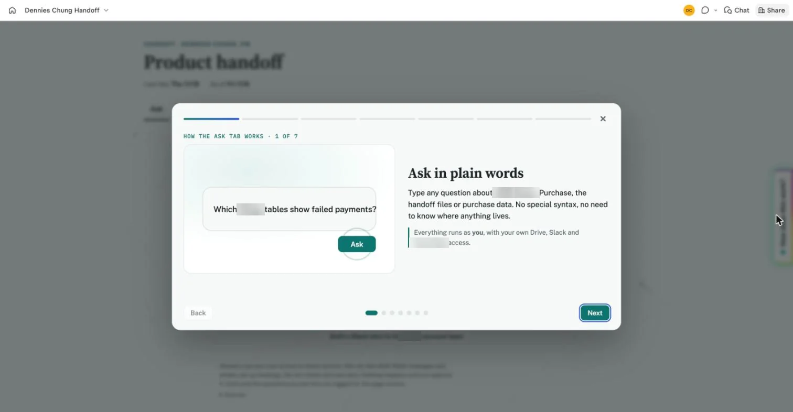
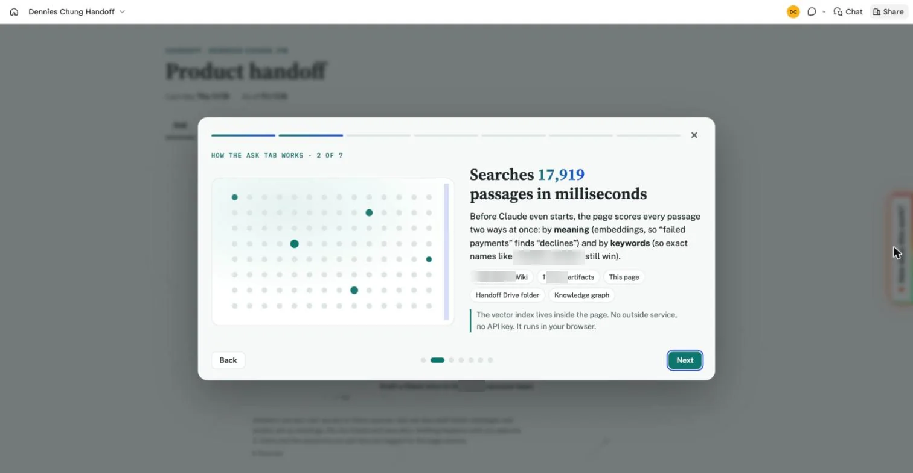
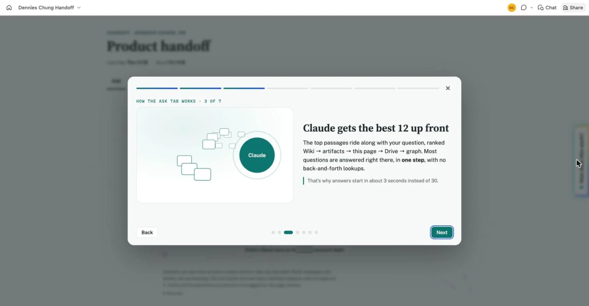
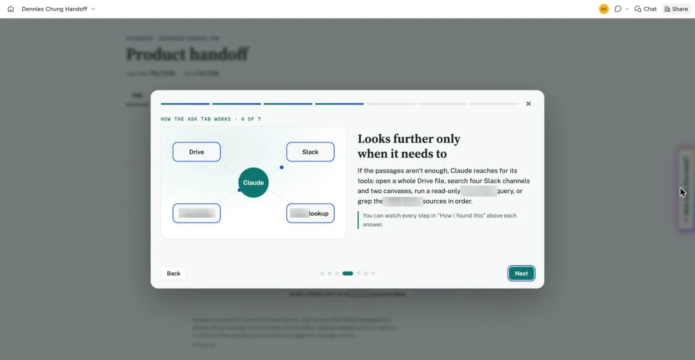
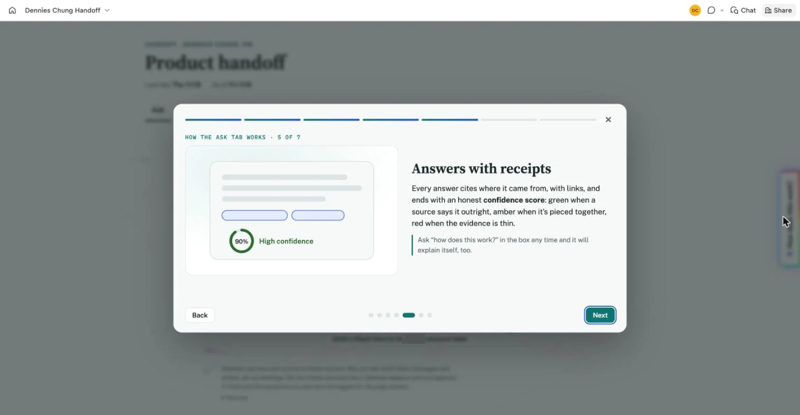
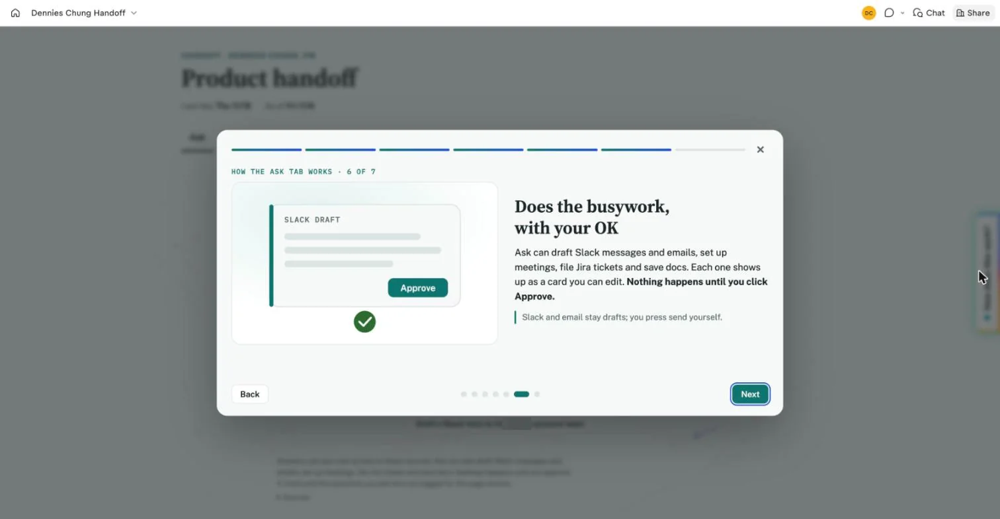
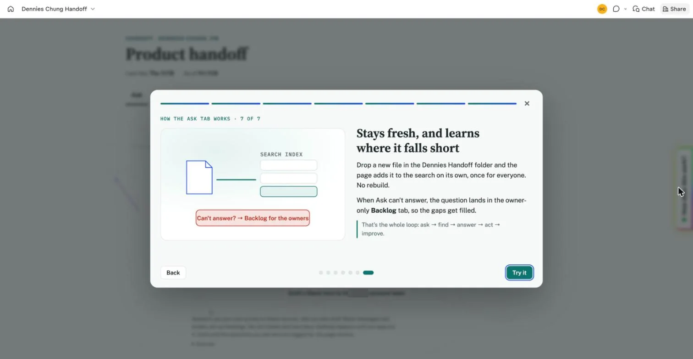
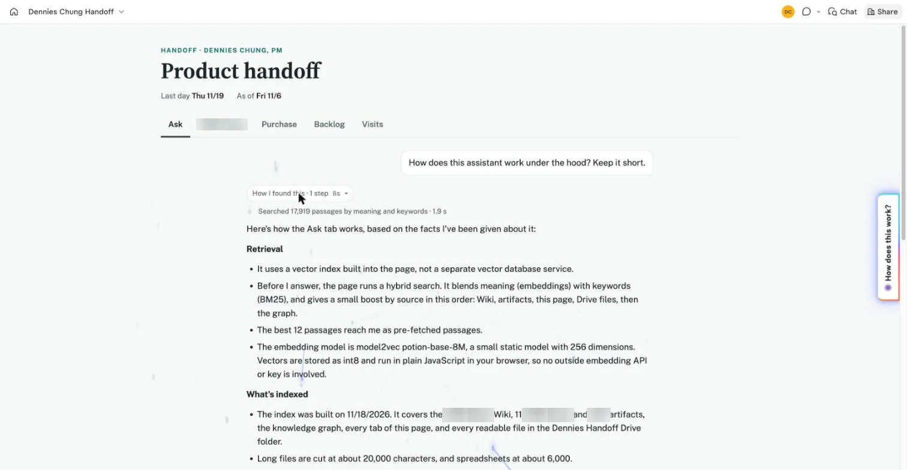
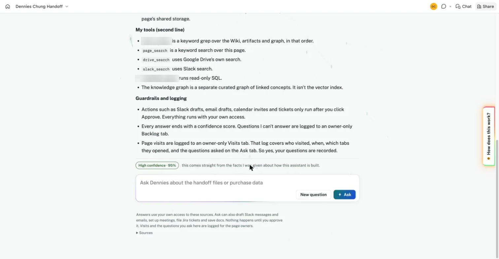
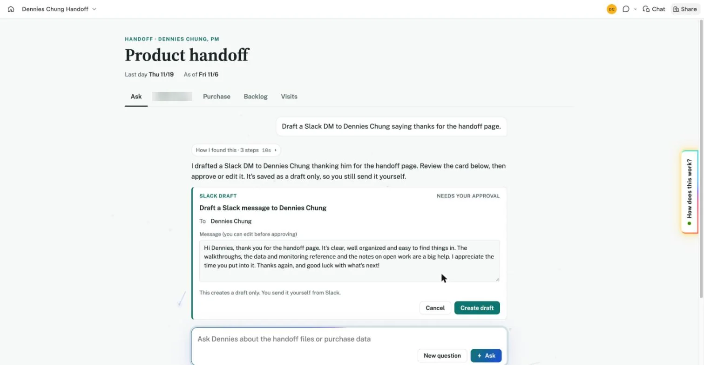
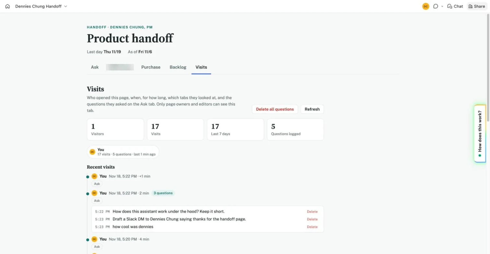
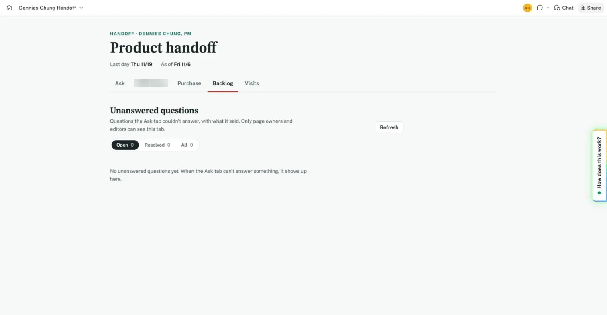
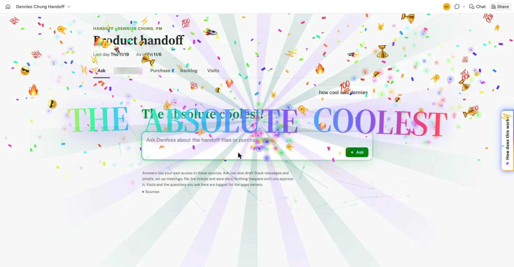
08Built with
- HTML, CSS and JavaScript
- model2vec (potion-base-8M)
- WordPiece tokenizer in JavaScript
- Cosine + BM25 hybrid retrieval
- int8 vector quantization
- UMAP (for the knowledge map)
- Claude (Claude artifacts, with tool use)
- Python and Node build scripts
- Claude Code
I designed and built it myself, with Claude Code as my pair programmer: I made the product and design calls, and we wrote the code together.